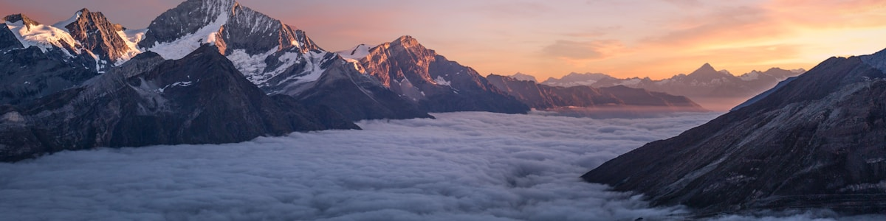
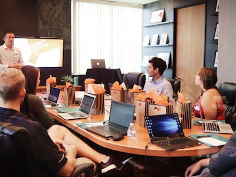

Make the Great Lakescape Lodge your destination in beautiful Door County. Nestled on the shores of Lake Michigan at Bailey's Harbor, our lodge is close to everything that Door County has to offer.
We are a family-owned and operated establishment and have been part of the Northern Wisconsin vacation scene for 25 years. The lodge is a great place for a romantic getaway or a family reunion. We also cater weddings and can provide all of the essentials to make your time here a special one.
It's our goal to make every guest feel pampered; from the gourmet breakfast and afternoon tea, to the fresh-baked cookies and complimentary sodas. Families will enjoy our rec room and pool and outdoor equipment for boating and cycling; but there are also secluded spots throughout the grounds just looking for a peaceful and restful workout.
Come and see for yourself what keeps our guests coming back year after year. We are open April 1st to October 31st. If you have never visited Door County before, let us be your guide to the wonderful sights and events that await you.
Join us for a ride along the county, sampling fine chocolate from the Door County chocolatiers. We'll supply the bikes and the maps, you supply the appetite!
Enjoy dancing in our spacious main hall. We'll have a live band playing music from the Salon Kaleidoscope Dinner.